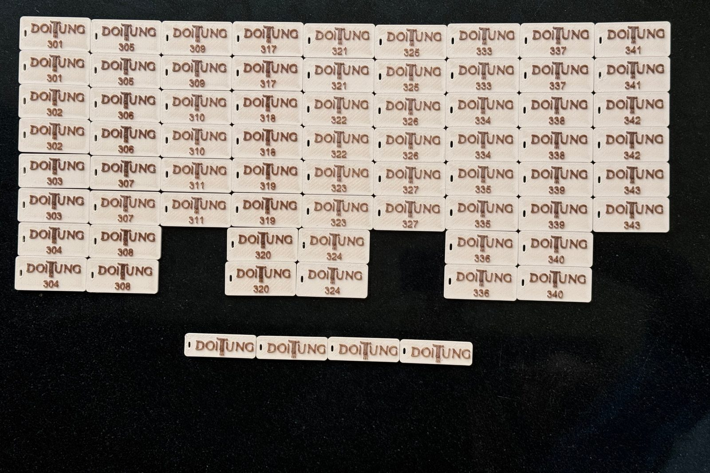
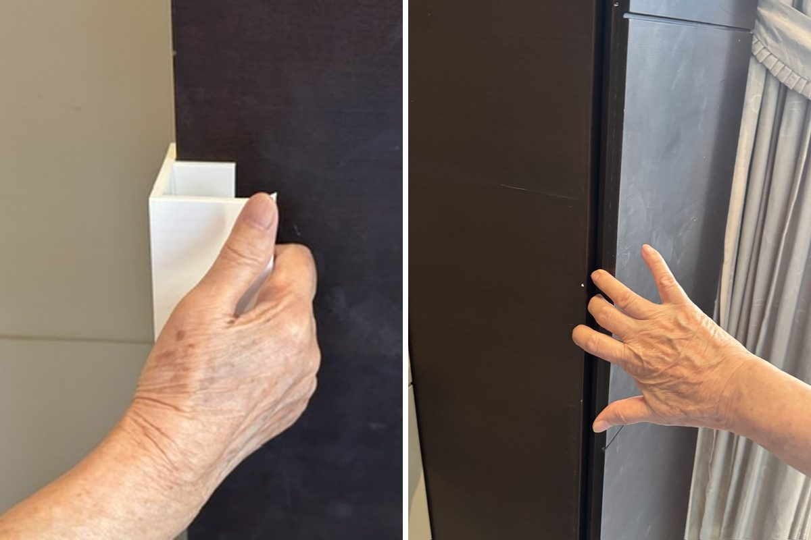
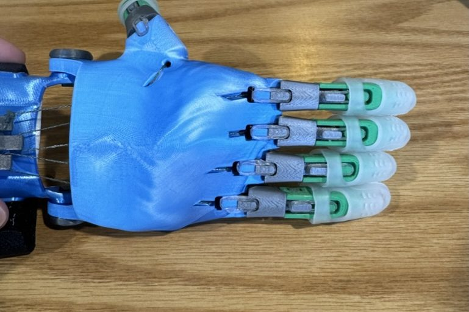
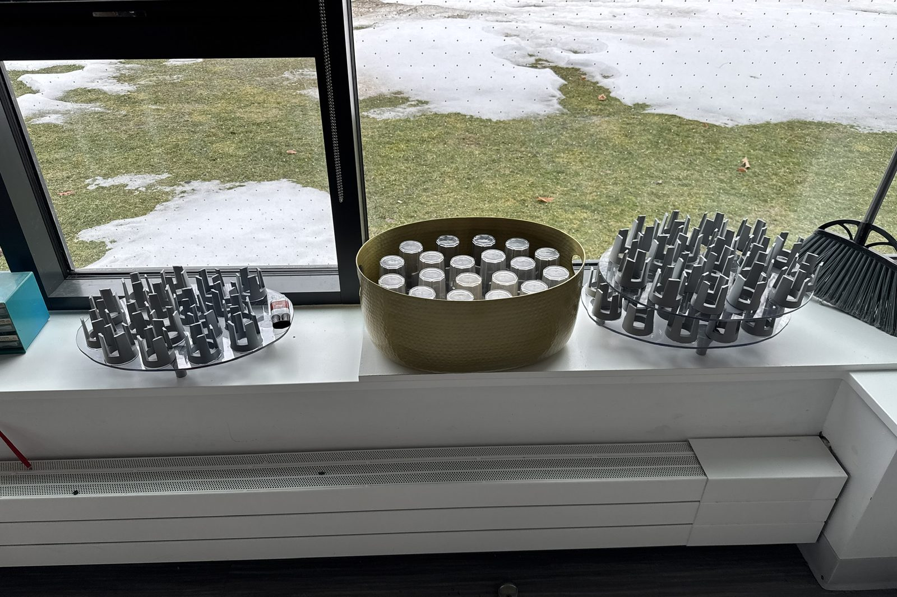
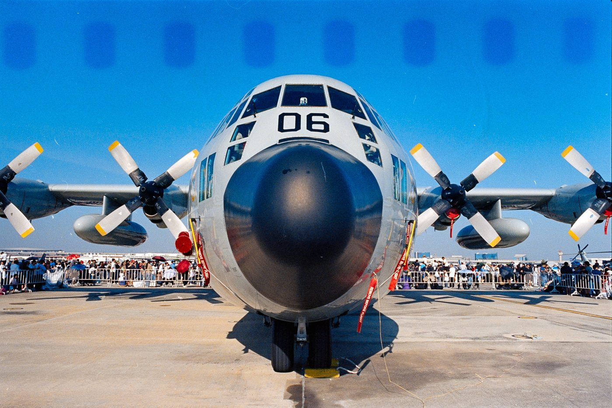

Biomedical Engineering · Boston University · Class of 2029
Thana (Kenny) Teeraphantuvat
I work with materials and light: biocomposites, gold nanorods and optical sensors. Now I’m pointing that at devices worn on the body.
Wearable ECG + PPG band for pulse arrival time
My grandmother’s stroke is why I care about monitoring. After a stroke, heart rhythm and blood pressure get checked constantly, and both leave signals at the skin. This band records an electrical signal (ECG) and an optical one (PPG) at the same time. The delay between them, the pulse arrival time, tracks how fast the pressure wave travels, which is one route to cuff-less blood-pressure estimates.
The goal is a validated measurement, not a gadget. Heart rate from the band is compared against a commercial watch using Bland–Altman agreement analysis.
- HardwareArduino Uno · AD8232 single-lead ECG · MAX30102 red/IR PPG, ~200 Hz
- SoftwareFirmware and a Python live-plot logger written
- AnalysisBand-pass filtering, R-peak and pulse-foot detection, PAT, HRV (RMSSD)
- NextBreadboard build, rest and post-exercise sessions, agreement vs. watch

Past work
 Mycelium biocomposites
Packaging grown from fungi and farm waste, as a replacement for polystyrene foam.
Mycelium biocomposites
Packaging grown from fungi and farm waste, as a replacement for polystyrene foam.

Macadamia-shell filament 3D-printing filament made from macadamia shell waste, used on Doi Tung's hotel key fobs.
EZGrip Handles that let my grandmother open cabinets again after her stroke. Gold nanorods
Nanoparticles tuned to 1030 nm for photoacoustic stimulation of the retina.
Gold nanorods
Nanoparticles tuned to 1030 nm for photoacoustic stimulation of the retina.
 6×17 panoramic camera
A 3D-printed panoramic film camera built around a large-format lens.
6×17 panoramic camera
A 3D-printed panoramic film camera built around a large-format lens.

Prosthetic hand and splints A body-powered e-NABLE hand, and Adapt3D splints printed for donation.
Dining hall cup racks Organizers for the NMH dining hall, designed and batch-printed through my 3D Printing Club.
Restoring film cameras Finding and fixing light leaks in a Nikon F2 and a Mamiya RB67. Touchless waste bin
An ultrasonic sensor and servo that open the lid without touch.
Touchless waste bin
An ultrasonic sensor and servo that open the lid without touch.
 Room-temperature monitor
An Arduino monitor that warns when my film storage gets too warm or cold.
Room-temperature monitor
An Arduino monitor that warns when my film storage gets too warm or cold.
 Cassette deck restoration
Rebuilt the tape transport of a 1990s AIWA deck that would no longer play.
Cassette deck restoration
Rebuilt the tape transport of a 1990s AIWA deck that would no longer play.